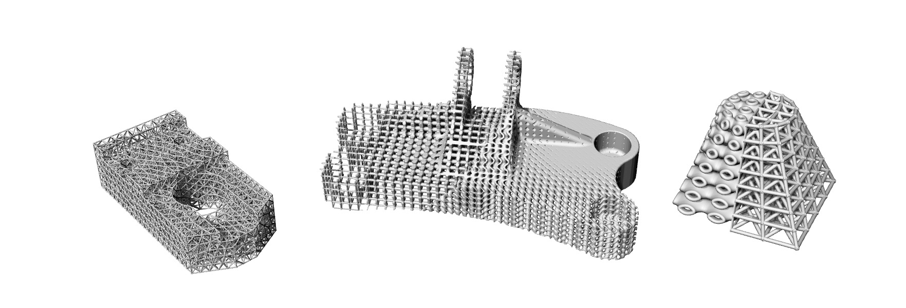

Artisan’s documentation#
Artisan is an implicit modelling based tool for lattice generation. The code is based on Python and C++ in order to combining the development speed and computational efficiency.
This is a general guide of Artisan usage. This document is regularly updated to reflect the development progress of Artisan package, address applications of features and tips of usages.
Contents: